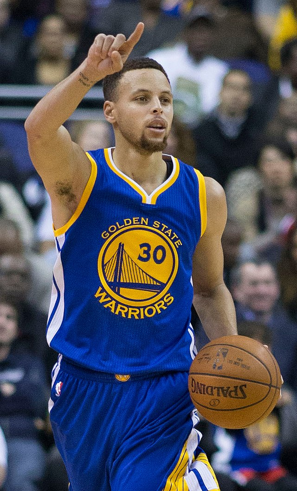
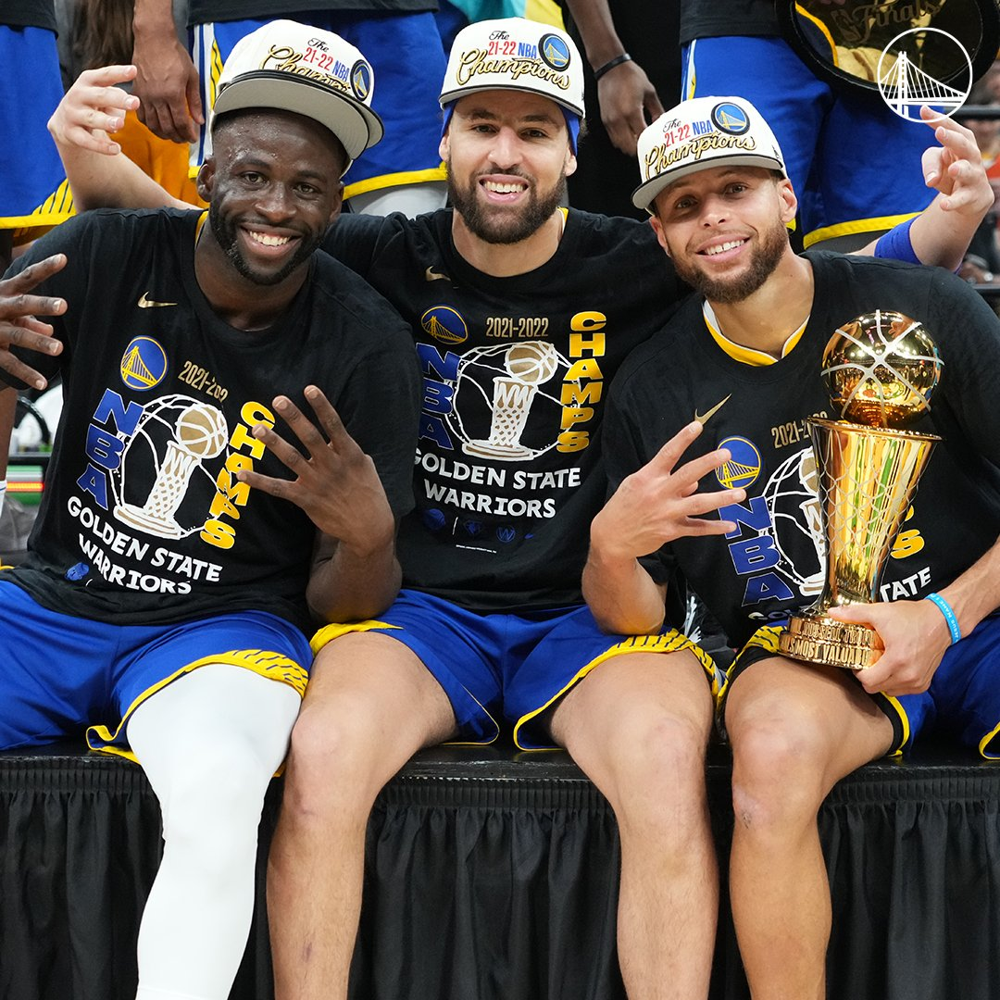

Golden State Warriors es uno de mis equipos favoritos. Los Golden State Warriors son un equipo de baloncesto de la NBA que se fundó en 1946 en Philadelphia, Pennsylvania como los Philadelphia Warriors. Pat Tyrrller una persona de la BBA (Basketball Association of America) fue el fundador de este equipo.
Durante sus primeros años, el equipo tuvo éxito en la liga, ganando el campeonato de la NBA en 1947 y 1956. Sin embargo, en 1962 se trasladaron a San Francisco, California y cambiaron su nombre a San Francisco Warriors. En 1971 volvió a cambiar de nombre, al actual, y pasó a llamarse Golden State Warriors y jugaron todos sus encuentros de locales en Oakland. Con el nombre anterior jugaron algunos de sus partidos ahí o en San José.
En el 2012, el equipo contrató al entrenador Mark Jackson y comenzó a construir un equipo sólido con jugadores como Stephen Curry, Klay Thompson y Draymond Green. Esto llevó a los Warriors a su primer campeonato de la NBA en 40 años en el 2014, y a ganar otros tres campeonatos en 2015, 2017 y 2018.